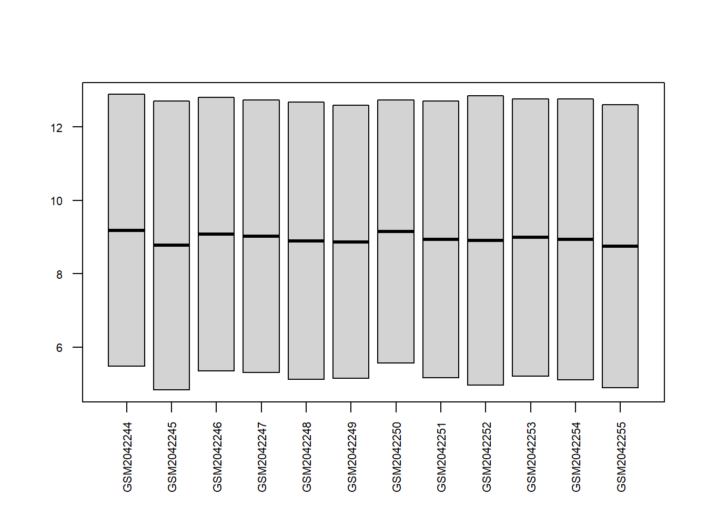
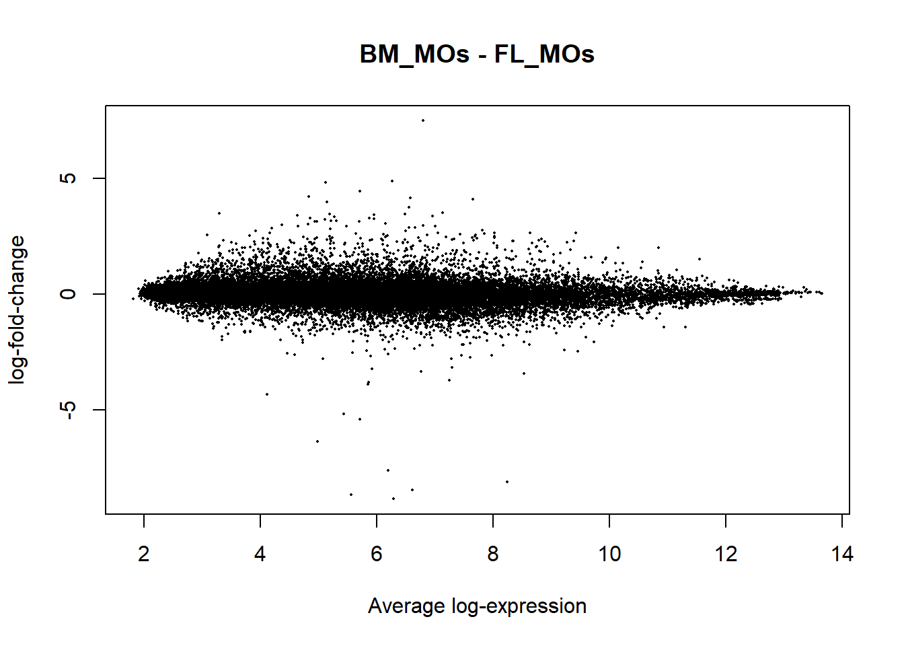

A <- getGEO("GSE76999", GSEMatrix = TRUE, getGPL = FALSE)## Found 1 file(s)## GSE76999_series_matrix.txt.gzB <- A[[1]]
varLabels(B)## [1] "title" "geo_accession" "status"
## [4] "submission_date" "last_update_date" "type"
## [7] "channel_count" "source_name_ch1" "organism_ch1"
## [10] "characteristics_ch1" "characteristics_ch1.1" "characteristics_ch1.2"
## [13] "treatment_protocol_ch1" "growth_protocol_ch1" "molecule_ch1"
## [16] "extract_protocol_ch1" "label_ch1" "label_protocol_ch1"
## [19] "taxid_ch1" "hyb_protocol" "scan_protocol"
## [22] "description" "data_processing" "data_processing.1"
## [25] "data_processing.2" "platform_id" "contact_name"
## [28] "contact_email" "contact_department" "contact_institute"
## [31] "contact_address" "contact_city" "contact_zip/postal_code"
## [34] "contact_country" "supplementary_file" "data_row_count"
## [37] "relation" "relation.1" "age:ch1"
## [40] "strain:ch1" "tissue:ch1"B$organism_ch1## [1] "Mus musculus" "Mus musculus" "Mus musculus" "Mus musculus" "Mus musculus" "Mus musculus"
## [7] "Mus musculus" "Mus musculus" "Mus musculus" "Mus musculus" "Mus musculus" "Mus musculus"
## [13] "Mus musculus" "Mus musculus" "Mus musculus" "Mus musculus" "Mus musculus" "Mus musculus"
## [19] "Mus musculus" "Mus musculus" "Mus musculus" "Mus musculus" "Mus musculus" "Mus musculus"
## [25] "Mus musculus" "Mus musculus" "Mus musculus" "Mus musculus" "Mus musculus" "Mus musculus"
## [31] "Mus musculus" "Mus musculus" "Mus musculus" "Mus musculus" "Mus musculus" "Mus musculus"B$title # Analogo a B$description## [1] "Monocyte extracted from adult (wk6-12) Bone Marrow, biological replicate 1"
## [2] "Monocyte extracted from adult (wk6-12) Bone Marrow, biological replicate 2"
## [3] "Monocyte extracted from adult (wk6-12) Bone Marrow, biological replicate 3"
## [4] "Monocyte extracted from adult (wk6-12) Bone Marrow, biological replicate 4"
## [5] "Monocyte extracted from E15.5 Fetal Liver, biological replicate 1"
## [6] "Monocyte extracted from E15.5 Fetal Liver, biological replicate 2"
## [7] "Monocyte extracted from E15.5 Fetal Liver, biological replicate 3"
## [8] "Monocyte extracted from E15.5 Fetal Liver, biological replicate 4"
## [9] "Macrophage extracted from E12.5 Yolk Sac, biological replicate 1"
## [10] "Macrophage extracted from E12.5 Yolk Sac, biological replicate 2"
## [11] "Macrophage extracted from E12.5 Yolk Sac, biological replicate 3"
## [12] "Macrophage extracted from E12.5 Yolk Sac, biological replicate 4"
## [13] "Alveolar Macrophage extracted from adult (wk6-12) mice via Bronchoalveolar lavage, biological replicate 1"
## [14] "Alveolar Macrophage extracted from adult (wk6-12) mice via Bronchoalveolar lavage, biological replicate 2"
## [15] "Alveolar Macrophage extracted from adult (wk6-12) mice via Bronchoalveolar lavage, biological replicate 3"
## [16] "Alveolar Macrophage extracted from adult (wk6-12) mice via Bronchoalveolar lavage, biological replicate 4"
## [17] "Alveolar Macrophage derived from transferred Bone Marrow Monocytes, 6 wks post-transfer, biological replicate 1"
## [18] "Alveolar Macrophage derived from transferred Bone Marrow Monocytes, 6 wks post-transfer, biological replicate 2"
## [19] "Alveolar Macrophage derived from transferred Bone Marrow Monocytes, 6 wks post-transfer, biological replicate 3"
## [20] "Alveolar Macrophage derived from transferred Bone Marrow Monocytes, 6 wks post-transfer, biological replicate 4"
## [21] "Alveolar Macrophage derived from transferred Fetal Liver Monocytes, 6 wks post-transfer, biological replicate 1"
## [22] "Alveolar Macrophage derived from transferred Fetal Liver Monocytes, 6 wks post-transfer, biological replicate 2"
## [23] "Alveolar Macrophage derived from transferred Fetal Liver Monocytes, 6 wks post-transfer, biological replicate 3"
## [24] "Alveolar Macrophage derived from transferred Fetal Liver Monocytes, 6 wks post-transfer, biological replicate 4"
## [25] "Alveolar Macrophage derived from transferred Yolk Sac Macrophages, 6 wks post-transfer, biological replicate 1"
## [26] "Alveolar Macrophage derived from transferred Yolk Sac Macrophages, 6 wks post-transfer, biological replicate 2"
## [27] "Alveolar Macrophage derived from transferred Yolk Sac Macrophages, 6 wks post-transfer, biological replicate 3"
## [28] "Alveolar Macrophage derived from transferred Yolk Sac Macrophages, 6 wks post-transfer, biological replicate 4"
## [29] "Alveolar Macrophage derived from transferred Alveolar macrophages, 6 wks post-transfer, biological replicate 1"
## [30] "Alveolar Macrophage derived from transferred Alveolar macrophages, 6 wks post-transfer, biological replicate 2"
## [31] "Alveolar Macrophage derived from transferred Alveolar macrophages, 6 wks post-transfer, biological replicate 3"
## [32] "Alveolar Macrophage derived from transferred Alveolar macrophages, 6 wks post-transfer, biological replicate 4"
## [33] "Alveolar Macrophage extracted from 6 wk old wild type mice via Bronchoalveolar lavage, biological replicate 1"
## [34] "Alveolar Macrophage extracted from 6 wk old wild type mice via Bronchoalveolar lavage, biological replicate 2"
## [35] "Alveolar Macrophage extracted from 6 wk old wild type mice via Bronchoalveolar lavage, biological replicate 3"
## [36] "Alveolar Macrophage extracted from 6 wk old wild type mice via Bronchoalveolar lavage, biological replicate 4"C <- exprs(B)
C[1:5,1:12]## GSM2042244 GSM2042245 GSM2042246 GSM2042247 GSM2042248 GSM2042249 GSM2042250 GSM2042251
## 10338001 12.883736 12.710357 12.808904 12.728285 12.670743 12.582576 12.728665 12.701661
## 10338002 5.478638 4.836992 5.354476 5.311100 5.128454 5.158269 5.576625 5.174163
## 10338003 11.565683 11.007533 11.348052 11.232528 10.989176 11.017759 11.300946 11.105487
## 10338004 9.784679 9.218110 7.900875 9.508223 7.373025 7.647630 9.188661 9.042846
## 10338005 2.179659 1.997411 2.215015 2.134441 2.062177 2.174181 2.091476 2.102721
## GSM2042252 GSM2042253 GSM2042254 GSM2042255
## 10338001 12.845415 12.763705 12.760986 12.609271
## 10338002 4.967542 5.210838 5.116310 4.890626
## 10338003 11.282599 11.216054 11.144170 10.939133
## 10338004 7.527401 9.193056 7.072794 9.433758
## 10338005 2.073256 2.095818 2.140202 2.067220boxplot(C[1:2,1:12], las=2, cex.axis = 0.7)
Adesso cerchiamo quali geni sono espressi con delle differenze tra le tre categorie di esperimento:
Bone Marrow
Fetal Liver
Yolk Sac
# Trasformiamo i valori in scala logaritmica (ex = C)
D <- log2(C)
labels <- c("BM_MOs","FL_MOs","YS_Macs")
sel_groups <- factor(rep(labels, each=4))
# Consideriamo E come il sottoinsieme dell'oggetto B ridotto a 12 colonne
E <- B[,1:12]
E$description <- sel_groups
design <- model.matrix(~ description + 0, E)
colnames(design) <- levels(sel_groups)
fit <- lmFit(E, design)
# Build comparison and compute the satistics: Dici a limma esattamente quali gruppi vuoi confrontare tra loro (es. BM_MOs contro FL_MOs).
cont.matrix <- makeContrasts(BM_MOs-FL_MOs, BM_MOs-YS_Macs, FL_MOs-YS_Macs, levels=design)
# Apply the contrast matrix to the linear model - Esegue i confronti
fit2 <- contrasts.fit(fit, cont.matrix)
# Generate the statistics (proportion -> assumed proportion of genes which are differentially expressed): Migliora le statistiche. eBayes è un passo fondamentale di limma che usa una tecnica statistica per "prestare" informazioni tra i geni, migliorando l'affidabilità delle stime di variabilità. Questo è cruciale per ottenere valori P più precisi, specialmente quando si hanno pochi campioni.
fit2 <- eBayes(fit2, proportion = 0.05)
# Extract the sig. DE genesCosa fa? Estrae i risultati finali. La funzione topTable() prende il modello fit2 e lo usa per creare una tabella con i geni che mostrano una differenza di espressione statisticamente significativa. Usa il parametro coef per specificare quale confronto vuoi vedere (ad esempio, coef=1 per BM_MOs-FL_MOs).
# coef=1 BM_MOs-FL_MOs
# coef=2 BM_MOs-YS_Macs
# coef=3 FL_MOs-YS_Macs
de_genes_BM_MOs_FL_MOs <- topTable(fit2, coef=1, adjust="fdr", p.value=0.05, number=Inf)
de_genes_BM_MOs_YS_Macs <- topTable(fit2, coef=2, adjust="fdr", p.value=0.05, number=Inf)
de_genes_FL_MOs_YS_Macs <- topTable(fit2, coef=3, adjust="fdr", p.value=0.05, number=Inf)
head(de_genes_BM_MOs_FL_MOs) # show top de genes in BM_MO vs FL_MO comparirson. ## logFC AveExpr t P.Value adj.P.Val B
## 10435497 -8.689962 5.561077 -46.92658 1.881934e-14 6.691403e-10 16.30296
## 10501020 7.496752 6.800520 36.32079 3.472725e-13 6.173810e-09 15.72408
## 10387568 2.975392 6.801732 26.57701 1.193418e-11 1.414439e-07 14.64075
## 10608637 -8.113364 8.242008 -25.58598 1.831783e-11 1.628272e-07 14.47541
## 10400143 4.879170 6.266135 24.84392 2.551738e-11 1.814592e-07 14.34200
## 10435504 -6.364942 4.983137 -24.35867 3.185952e-11 1.887995e-07 14.24994# Get all the DE genes regardless the comparisons
all_de_genes <- topTable(fit2, adjust="fdr", p.value=0.05, number=Inf)
all_genes_BM_MOs_FL_MOs <- topTable(fit2, coef=1, adjust="fdr", p.value=1, number=Inf)
# These tables will be used later
# Output in an excel file
wb <- createWorkbook()
# Create each sheet
addWorksheet(wb, "de_genes_BM_MOs_FL_MOs")
addWorksheet(wb, "de_genes_BM_MOs_YS_Macs")
addWorksheet(wb, "de_genes_FL_MOs_YS_Macs")
# Write the data into each sheet
writeData(wb, "de_genes_BM_MOs_FL_MOs", de_genes_BM_MOs_FL_MOs, rowNames = FALSE)
writeData(wb, "de_genes_BM_MOs_YS_Macs", de_genes_BM_MOs_YS_Macs, rowNames = FALSE)
writeData(wb, "de_genes_FL_MOs_YS_Macs", de_genes_FL_MOs_YS_Macs, rowNames = FALSE)
saveWorkbook(wb, "DE_genes_GSE76999.xlsx", overwrite = TRUE)columns(mogene10sttranscriptcluster.db)## [1] "ACCNUM" "ALIAS" "ENSEMBL" "ENSEMBLPROT" "ENSEMBLTRANS" "ENTREZID"
## [7] "ENZYME" "EVIDENCE" "EVIDENCEALL" "GENENAME" "GENETYPE" "GO"
## [13] "GOALL" "IPI" "MGI" "ONTOLOGY" "ONTOLOGYALL" "PATH"
## [19] "PFAM" "PMID" "PROBEID" "PROSITE" "REFSEQ" "SYMBOL"
## [25] "UNIPROT"ID <- featureNames(E)
tmp <- select(mogene10sttranscriptcluster.db, ID, c("SYMBOL", "ENTREZID"))## 'select()' returned 1:many mapping between keys and columnstmp <- na.omit(tmp)
all_genes_BM_MOs_FL_MOs$ENTREZID <- tmp$ENTREZID[match(rownames(all_genes_BM_MOs_FL_MOs), tmp$PROBEID)]
all_de_genes$symbol <- tmp$SYMBOL[match(rownames(all_de_genes), tmp$PROBEID)]
all_de_genes <- na.omit(all_de_genes)
de_genes_BM_MOs_FL_MOs$ENTREZID <- tmp$ENTREZID[match(rownames(de_genes_BM_MOs_FL_MOs), tmp$PROBEID)]
#de_genes_BM_MOs_FL_MOs$symbol <- na.omit(tmp$ENTREZID[match(rownames(de_genes_BM_MOs_FL_MOs), tmp$PROBEID)])
de_genes_BM_MOs_YS_Macs$ENTREZID <- tmp$ENTREZID[match(rownames(de_genes_BM_MOs_YS_Macs), tmp$PROBEID)]
#de_genes_BM_MOs_YS_Macs$symbol <- na.omit(tmp$ENTREZID[match(rownames(de_genes_BM_MOs_YS_Macs), tmp$PROBEID)])
de_genes_FL_MOs_YS_Macs$ENTREZID <- tmp$ENTREZID[match(rownames(de_genes_FL_MOs_YS_Macs), tmp$PROBEID)]
#de_genes_FL_MOs_YS_Macs$symbol <- na.omit(tmp$ENTREZID[match(rownames(de_genes_FL_MOs_YS_Macs), tmp$PROBEID)])
ma <- fit2[,"BM_MOs - FL_MOs"]
limma::plotMA(ma)
Cosa puoi dedurre dal tuo grafico?
La forma a “ventaglio” o “imbuto” è tipica e attesa. I geni a bassa espressione (a sinistra del grafico) mostrano una maggiore variabilità nel log-fold change, mentre i geni ad alta espressione (a destra) sono molto più stabili e raggruppati intorno allo zero. Questo è un buon segno e indica che i dati sono stati normalizzati correttamente.
I punti più lontani dalla linea orizzontale dello 0 sull’asse Y rappresentano i geni con la più grande differenza di espressione tra BM-MOs e FL-MOs. Molti di questi punti (che rappresentano i geni differenzialmente espressi) si concentrano nelle regioni a più alta espressione, come si può notare dalla coda del grafico.